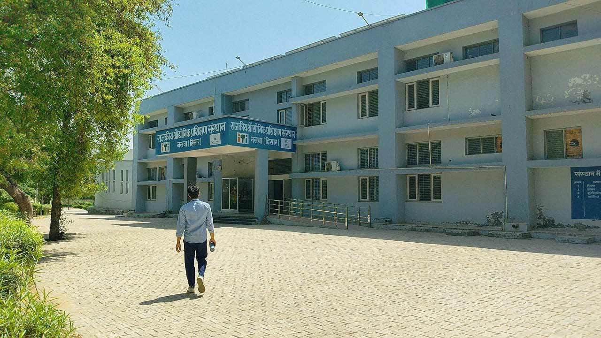

Your path to a successful career in technical education
ITI Nalwa is one of the leading institutes in Hisar that offers specialized technical training in various trades. We aim to provide quality education and skill development to students who are eager to pursue a career in the industrial sector.
At ITI Nalwa, we offer a range of courses in fields such as electrical, mechanical, computer science, and more. Our experienced faculty and state-of-the-art infrastructure ensure that students are equipped with the necessary skills to excel in their respective fields.
Contact Us for Admission